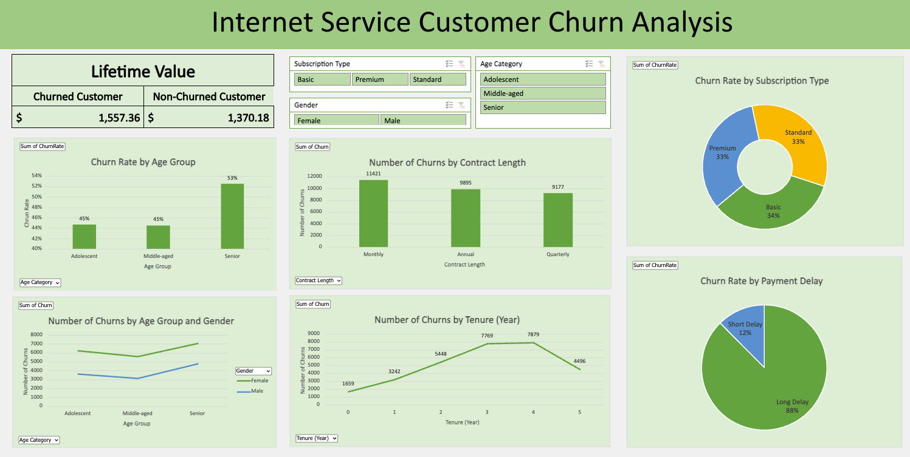

Internet Service Customer Churn Analysis (Excel)
In this analysis, we explore the Customer Churn dataset to understand the factors that lead to customers discontinuing their internet service. We also offer recommendations on how to reduce churn and retain customers.
-
Is the difference in LTV between churned and non-churned customers statistically significant?
Determine how much impact the company can have due to churned customers.
-
Is Subscription Type correlated with customer churn?
Determining which subscription type is more likely to result in customer churn.
-
Which Contract Length leads to higher customer churn?
Identifying the contract length that has the highest rate of customer churn.
-
Is payment delay related to customer churn?
Analyzing the relationship between payment delays and customer churn.
-
Is there any correlation between Gender, Age, and Customer Churn?
Identifying the correlation between gender, age, and customer churn.
-
Which Tenure category is more likely to result in customer churn?
Identifying the tenure category that is most likely to experience customer churn.
Excel Source File: Go to Excel
Dataset Source: Customer Churn Dataset
Final Dashboard
Cleaning the Dataset
Step 1: Understand the Dataset
The dataset contains 64,374 records of customer-related data. There are 11 columns of data:
-
CustomerID: A unique identifier for each customer.
-
Age: The age of the customer.
-
Gender: The gender of the customer (e.g., Male, Female).
-
Tenure: The length of time (in months) that the customer has been using the service.
-
Support Calls: The number of times the customer has contacted customer support.
-
Payment Delay: Indicates how frequently the customer has delayed payments.
-
Subscription Type: The type of subscription the customer has chosen (e.g., Basic, Standard, Premium).
-
Contract Length: The duration of the contract (e.g., 1 year, 2 years).
-
Total Spend: The total amount of money the customer has spent on the service.
-
Last Interaction: The last time the customer interacted with the service or company.
-
Churn: Indicates if the customer has stopped using the service ("1" for churned, "0" for active).
I first converted the cells into a table using Cmd + T in Excel.
Step 2: Check for Duplicates
After understanding the dataset, I checked for duplicates using Excel's built-in "Remove Duplicates" function.
Step 3: Check for Blank or Irregular Values
Using conditional formatting, I highlighted and removed any blank rows.
Preparing the Dataset
Creating New Columns
I added a "Total Count" column filled with the value 1, to calculate the churn rate in a pivot table. I also created an "Age Categories" column by grouping ages into "Adolescents," "Middle-aged," and "Seniors." Next, I converted the "Tenure" column into "Tenure in Years" and categorized the "Payment Delay" column into "Long Delay" and "Short Delay."
Changing Data Type
I changed the "Total Spend" column's data type from General to Currency (Dollar).
Define Metrics for the Dashboard
We created the following pivot tables to answer key business questions:
Metric 1: Lifetime Value of Churned and Non-Churned Customers
Values: CustomerID (By Count), Total Spend (By Sum), Tenure (Average)
Rows: Churn
Metric 2: Churn Rate by Subscription Type
Values: Churn Rate
Rows: Subscription Type
Metric 3: Number of Churns by Contract Length
Values: Churn
Rows: Contract Length
Metric 4: Churn Rate by Payment Delay
Values: Churn Rate
Rows: Payment Delay Category
Metric 5: Number of Churns by Age Group and Gender
Values: Churn
Rows: Age Category
Columns: Gender
Metric 6: Number of Churns by Tenure (Year)
Values: Churn
Rows: Tenure
Creating Charts for Metrics
Metric 2: Churn Rate by Subscription Type
Created a Doughnut Chart for Subscription Type.
Metric 3: Number of Churns by Contract Length
Created a Bar Chart with Contract Length on the x-axis and Number of Churns on the y-axis.
Metric 4: Churn Rate by Payment Delay
Created a Pie Chart for Payment Delay categories.
Metric 5: Number of Churns by Age Group and Gender
Created a Line Chart with Age Group on the x-axis and Number of Churns on the y-axis.
Metric 6: Number of Churns by Tenure (Year)
Created a Line Chart with Tenure (Year) on the x-axis and Number of Churns on the y-axis.
Creating Slicer
Created slicers to filter data and gain additional insights.
Analysis from the Dashboard
Analysis 1: Lifetime Value of Churned and Non-Churned Customers
Churned customers have significantly higher LTV than non-churned customers, indicating a need to focus on retaining high-value customers.
Analysis 2: Churn Rate by Subscription Type
There is no significant relationship between subscription type and customer churn.
Analysis 3: Number of Churns by Contract Length
Monthly contracts have the highest churn rate, while quarterly contracts have the lowest.
Analysis 4: Churn Rate by Payment Delay
Customers with longer payment delays are 88% more likely to churn.
Analysis 5: Number of Churns by Age Group and Gender
Senior customers are more likely to churn. Marketing efforts should target female customers to reduce churn.
Analysis 6: Number of Churns by Tenure (Year)
Customers with tenures of 3-4 years are more likely to churn. Companies should focus on retaining customers who have been with them for 3-4 years.